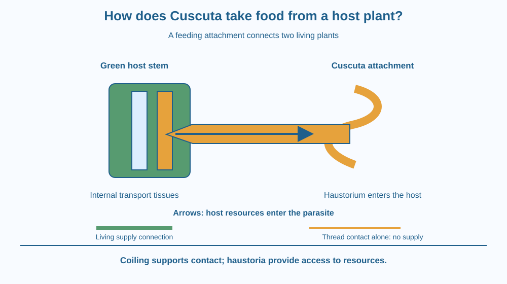

Explain how Cuscuta, often called amarbel, obtains materials from another living plant. Identify the host, the parasite and their feeding connection. Distinguish a stem wrapped around a support from a parasite connected to that support's internal transport tissues.
You notice a tangle of yellowish threads wound around a green hedge. At first it looks like string caught in the branches. Look more carefully: it is a plant. The threads branch and grip living stems, yet they do not carry the broad green leaves you expect.
The green hedge has ordinary leaves and roots. The yellowish plant seems to depend on the hedge. Is it only using a convenient climbing frame, or is there a connection hidden beneath the surface? The answer lies at the points where their stems meet.
Cuscuta is a genus of parasitic flowering plants. Different species vary, so a single statement about every species would be misleading. The familiar yellowish amarbel example has very small, reduced leaves and depends heavily on a host for nutrition.
A parasite gains resources from another living organism, its host. The relationship benefits the parasite while imposing a cost on the host. This cost can include losing water and sugars that could otherwise support the host's growth.
When a suitable Cuscuta stem contacts a host, it coils around it. At attachment sites, it develops specialised structures called haustoria. One structure is a haustorium. It grows into host tissues and establishes access to the host's transport system.
The host contains xylem, which transports water and dissolved mineral nutrients, and phloem, which carries sugars and other organic materials. Successful haustorial connections allow the parasite to obtain resources through these internal pathways. It is not merely licking dew from the outside of a stem.
This explains why wrapping alone is insufficient. A piece of yellow thread can circle a plant without receiving food. A garden climber can grip a stick while obtaining its own materials elsewhere. A Cuscuta feeding attachment involves living tissues connecting across the boundary between two plants.
A young Cuscuta seedling initially uses stored resources. It must establish an effective host connection to support continued development. Once established, its dependence on the original soil connection can diminish. For this lesson, the crucial transition is from a seedling's limited reserves to sustained access through a host.
Descriptions of Cuscuta as completely lacking chlorophyll are useful school simplifications for the familiar example, but the genus includes variation. Some species retain limited photosynthetic activity. The safe general statement is that parasitic Cuscuta obtains substantial resources from its host through haustoria.
The host may grow less vigorously if the resource drain is large. The effect depends on the host, parasite and growing conditions. A few attachments do not justify inventing a percentage reduction in crop yield. Mechanism tells us why damage is possible without pretending all infestations have identical effects.
Draw a house with its own water and food supplies. Now draw another household using a connection to those supplies without paying them back. The second household receives resources, while the first has fewer available for itself.
In the plant model, the green stem is the host, the yellowish strand is the parasite, and the haustorium is the specialised attachment. The analogy has limits: a haustorium is living tissue, not a drilled metal pipe.
Separate support from supply in your drawing. The winding stem helps maintain contact. The haustorium provides the feeding connection. Labelling only the coils leaves the most important part unexplained.
The SVG shows a green host stem and an amber Cuscuta strand coiled beside it. A magnified section shows an amber attachment entering the host's outer boundary and approaching the internal transport region.
Arrows point from the host's supply region toward the parasite. Dedicated labels explain that water, minerals and sugars move through established connections. The magnification is a teaching diagram, not a drawing to scale or a claim that tissues have these colours.
A separate comparison at the bottom shows plain thread touching a stem without a feeding connection. Touching is therefore visually distinguished from parasitic access.

Amarbel can be noticed on shrubs, hedges and some crops in India. Recognising it as a living parasite helps explain why a tangled patch can matter to a gardener. The concern is the host's resource loss, not the yellow colour by itself.
Different host plants vary in susceptibility. Seeing an unidentified vine does not prove that it is Cuscuta. Many harmless climbers also wrap around other plants. Identification needs more than the fact that something climbs.
Do not collect or move suspect strands between plants. Carrying a living parasite into a garden would turn a learning observation into an avoidable problem. A drawing or a photograph is enough for classroom discussion.
Use paper, two coloured pencils and a piece of thread. There is no need to handle a real parasite.
Ask someone which drawing represents a feeding connection. If they choose the thread merely because it is wound tightly, show them the internal attachment. The activity tests the mechanism, not artistic skill or the speed of plant growth.
Suppose a Cuscuta strand circles a plastic rod placed beside a host. The rod provides support but has no living transport system. Would wrapping around it solve the parasite's need for sustained resources?
Now imagine a host whose tissues prevent a successful feeding connection. Contact could occur without effective access. Explain why seeing a coil is weaker evidence of successful parasitism than finding a functioning haustorial connection.
Which structure connects Cuscuta to host tissues?
Answer: C — Haustoria penetrate host tissues and establish access to transported resources.
Why can a host lose growth resources to Cuscuta?
Answer: A — Materials diverted into the parasite are no longer all available to the host.
Would a plastic rod alone supply Cuscuta with sustained nutrition?
Answer: B — Support alone provides no host transport tissues or continuing biological supply.
Create a two-panel guide titled “Support or supply?” In the first panel, show a normal climber resting on a fence. In the second, show Cuscuta attached to a host.
Label the source of resources in each panel and explain where a feeding connection exists. Include one sentence about the host's possible cost, without claiming that every host immediately dies or that every yellow climbing strand is amarbel.
Being a plant does not guarantee the same way of obtaining food. Plants include relationships ranging from independent growth to strong dependence on other plants. Cuscuta is especially revealing because much of its feeding machinery is hidden inside an attachment. The conspicuous yellow coils show you where to look, but not the whole mechanism.
Cuscuta obtains resources from a living host through haustoria; winding around a stem alone does not explain how it feeds.